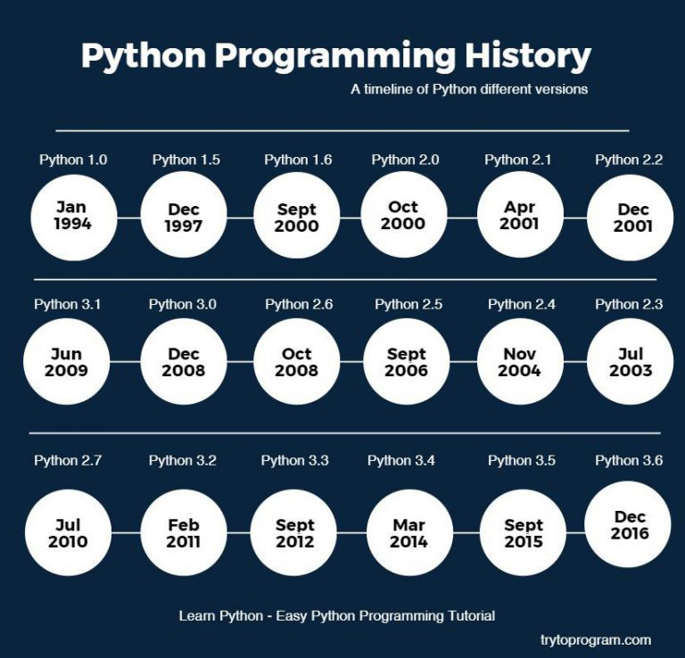

History of Python
Python is a high-level object-oriented programming language with mixed dynamic semantics. It was influenced by ABC, which is a general-purpose programming language. Python was created in the late 1980’s and was implemented in 1989. It was created by a Dutch programmer, Guido van Rossum. Here brief summary of how Python came to be:
In December 1989, I was looking for a ‘hobby’ programming project that would keep me occupied during the week around Christmas. My office ... would be closed, but I had a home computer, and not much else on my hands. I decided to write an interpreter for the new scripting language I had been thinking about lately: a descendant of ABC that would appeal to Unix/C hackers. I chose Python as a working title for the project, being in a slightly irreverent mood (and a big fan of Monty Python's Flying Circus).
Versions of Python
 Python has been consistent about coming out with new versions every few years since Python began. In June of 2018, Python released version 3.7 which is the newest version currently availible. They are presently working on version 3.8 which is set to come out in November of 2019. By continuing their advancement in coming out with newer versions, Python increases their ever growing populartiy in the programming world. Python is third amongst the most popular programming languages as of August, 2018.